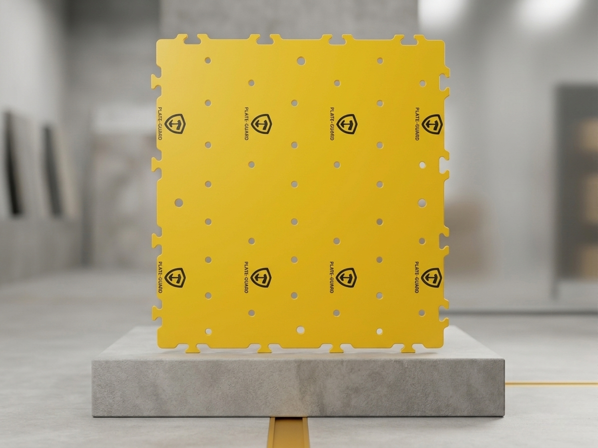
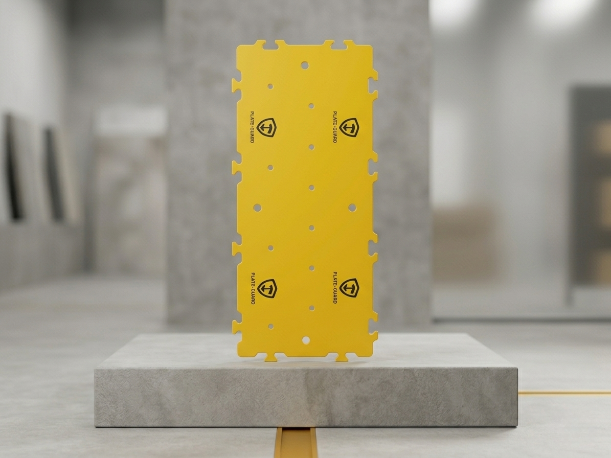
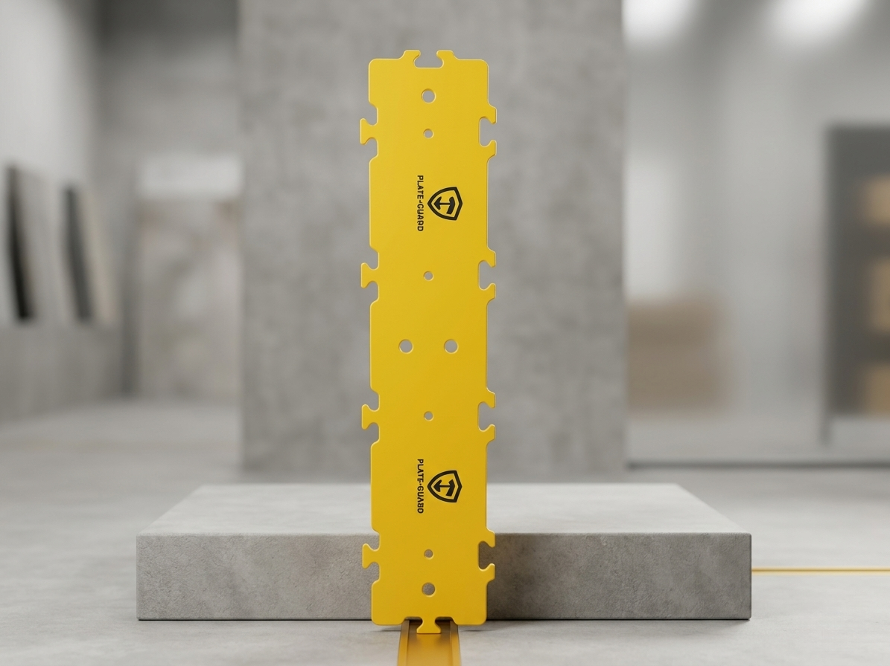
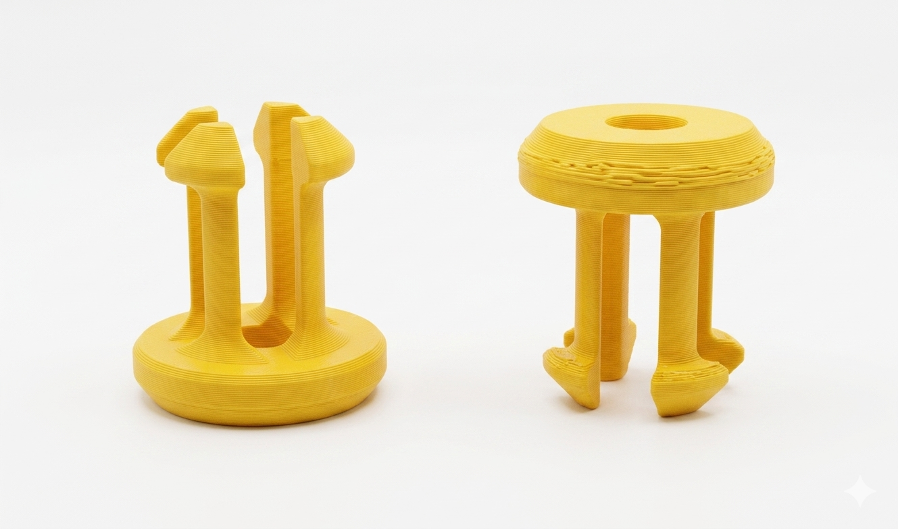
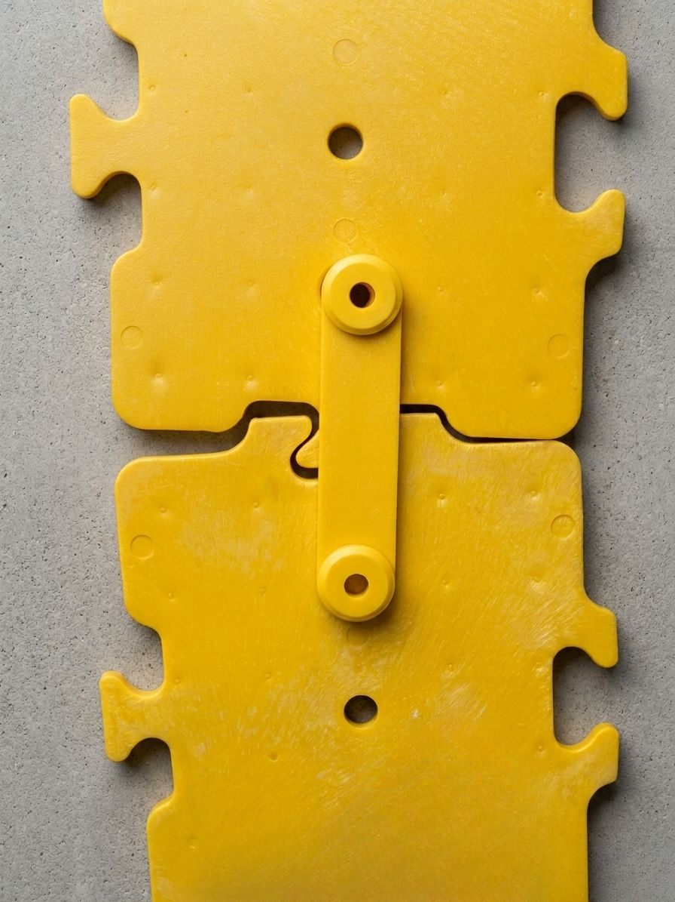

Sistema PlateGuard™
Protección mecánica para daños ocacionados
por terceros
Cuando una excavadora impacta fuera de zona, ningún procedimiento reacciona a tiempo.
PlateGuard™ actúa como una barrera mecánica entre el cucharón y su tubería, cable o fibra óptica, protegiendo frente a
daños por terceros de forma pasiva, permanente y sin mantenimiento.
32T
Impacto
HDPE
Alta densidad
PG·1-PG·2-PG·3
3 referencias modulares
Modulares
Fácil de instalar sin maquinaría
scroll
3
Referencias
32T
Alta resistencia al impacto
Oil&Gas·Telefonía·Eléctrico
Sectores industriales
HDPE
Material de alta densidad
El Problema con los métodos tradicionales de protección
Proteger la infraestructura enterrada por daños o golpes ocacsionados por terceros.
"Ante un impacto, la única defensa que queda es reparar su ducto ó reparara los daños ocacionados . PlateGuard™ en ese instante se convierte en una barrera mecánica de protección "
👁️
Las señalizaciones desaparecen
Al retirar las primeras capas de suelo, las marcas de pintura y cintas dejan de ser visibles. El operador avanza desde la memoria.
🌊
Visibilidad nula en campo real
En barro, agua o poca luz, el operador no detecta el activo hasta que el cucharón ya ha hecho contacto.
⚠️
La cinta de advertencia no resiste
Una cinta plástica no opone resistencia mecánica. La primera barrera real ante el cucharón sigue siendo la propia tubería.
⏱️
El reflejo humano llega tarde
El tiempo para romper una tubería de polietileno es inferior al tiempo de reacción promedio de cualquier operador.
Cómo Funciona
Instalar - Rellenar - Proteger.
Sin electricidad, sensores ni mantenimiento. Opera por presencia física permanente.
1
Tubería instalada
Activo enterrado a profundidad normativa.
2
Primer relleno
Arena 15–30 cm sobre el activo.
3
PlateGuard™
Barreras interconectadas cubriendo el ancho total.
4
Relleno final
Zanja completada. Sistema invisible.
5
Protección activa
La Barrera intercepta el cucharón.
🌍 Superficie del terreno
░ Relleno superior
▬ BARRERA MECÁNICA PlateGuard™ ▬
░ Arena de cama — relleno inferior
〰 Tubería · Cable · Fibra — PROTEGIDOS
Principio: Sacrificio controlado
Al recibir el impacto, la Barrera PlateGuard™ absorbe y redistribuye la energía del golpe antes de que llegue al activo. el activo permanece intacto.
Sistema PlateGuard™
Tres referencias. Un solo sistema.
Las Barreras Mecánicas PlateGuard™ están disponibles en tres referencias modulares, interconectables entre sí para cubrir cualquier ancho de zanja.

REFERENCIA
PG-1
Barrera amplia — máxima cobertura lateral para zanjas anchas e infraestructura de alta densidad.
Ver especificaciones →

REFERENCIA
PG-2
Barrera media — para zanjas estándar de distribución de gas o telecomunicaciones.
Ver especificaciones →

REFERENCIA
PG-3
Barrera estrecha — ideal para zanjas angostas y tramos de fibra óptica o cables individuales.
Ver especificaciones →
Sectores de Aplicación
Diseñado para protección de infraestructura subterránea.
🔥
Gas Natural y Energía
Protección de gasoductos de distribución y transmisión en zonas urbanas e industriales.
Sustento regulatorio documentado
Color amarillo según norma de marcación
Posición sólida ante auditorías
📡
Telecomunicaciones y Fibra
Un corte en fibra troncal puede desconectar miles de usuarios. PlateGuard™ actúa antes del contacto.
Protección directa de compromisos SLA
Colores personalizables
Aplicable en nodos críticos
⚡
Infraestructura Eléctrica
Cables de alta y media tensión bajo tierra requieren la barrera física que ningún procedimiento puede reemplazar.
Evidencia de medida preventiva razonable
Compatible con especificaciones de utilities
Instalación en minutos
Protección de Infraestructura Subterránea
Protección mecánica para cables eléctricos, fibra óptica y tuberías de gas.
Barrera física instalada sobre el activo durante el relleno — previene daños por excavación de terceros en redes de gas, telecomunicaciones e infraestructura eléctrica.
Sistema PlateGuard™
Barreras Mecánicas de Protección
HDPE de alta densidad · Certificado a 32 toneladas · Sistema modular interconectable · PG-1, PG-2, PG-3 + Pines de sujeción
PG-1 — Barrera Amplia
PlateGuard™ PG-1
La referencia de mayor cobertura lateral del sistema PlateGuard™. Diseñada para zanjas anchas con múltiples ductos, redes de alta densidad o proyectos que requieren la máxima cobertura transversal. Una sola barrera PG-1 puede cubrir el ancho completo de zanjas de gran formato.
Especificaciones Técnicas
Material
HDPE alta densidad
Resistencia al impacto
32 toneladas certificado
Formato
Barrera de gran formato
Sistema de ensamblaje
Macho/hembra sin herramientas
Color estándar
Amarillo seguridad
Compatibilidad
PG-1 · PG-2 · PG-3
Mantenimiento
Ninguno requerido
Aplicaciones recomendadas
Zanjas de gran formato con múltiples ductos paralelos
Redes de alta densidad en corredores urbanos principales
Gasoductos de transmisión con alta cobertura requerida
Proyectos donde se requiere el mínimo número de módulos por metro lineal
PG-2 — Barrera Media
PlateGuard™ PG-2
La referencia de ancho medio del sistema PlateGuard™. Cubre zanjas estándar de distribución de gas, telecomunicaciones e infraestructura eléctrica. Equilibra cobertura lateral y eficiencia de instalación, siendo la referencia más versátil del portafolio para proyectos de infraestructura urbana.
Especificaciones Técnicas
Material
HDPE alta densidad
Resistencia al impacto
32 toneladas certificado
Formato
Barrera media rectangular
Sistema de ensamblaje
Macho/hembra sin herramientas
Color estándar
Amarillo seguridad
Compatibilidad
PG-1 · PG-2 · PG-3
Mantenimiento
Ninguno requerido
Aplicaciones recomendadas
Zanjas estándar de distribución de gas natural urbano
Redes de telecomunicaciones en corredores de media densidad
Cables de media tensión en proyectos de urbanización
Proyectos donde se requiere balance entre cobertura y costo por metro lineal
PG-3 — Barrera Estrecha
PlateGuard™ PG-3
La barrera de menor ancho del sistema PlateGuard™. Diseñada para zanjas angostas donde se instalan ductos individuales, cables de telecomunicaciones o fibra óptica. Su perfil compacto permite una instalación eficiente sin comprometer la resistencia mecánica certificada.
Especificaciones Técnicas
Material
HDPE alta densidad
Resistencia al impacto
32 toneladas certificado
Formato
Barrera estrecha / elongada
Sistema de ensamblaje
Macho/hembra sin herramientas
Color estándar
Amarillo seguridad
Compatibilidad
PG-1 · PG-2 · PG-3
Mantenimiento
Ninguno requerido
Aplicaciones recomendadas
Zanjas angostas para fibra óptica y cables de telecomunicaciones
Ductos individuales de distribución de gas en zonas urbanas
Tramos con espacio lateral reducido o instalaciones existentes adyacentes
Proyectos de expansión de redes donde el ancho de zanja es limitado
Complemento del Sistema
Pines de Sujeción PlateGuard™
Los Pines de Sujeción son el complemento oficial del sistema PlateGuard™. Fabricados en el mismo HDPE de alta densidad, se insertan en los orificios de las barreras para fijar la posición de módulos adyacentes y evitar desplazamientos laterales durante el proceso de relleno y compactación.
Especificaciones
Material
HDPE alta densidad
Función
Fijación lateral de módulos
Compatibilidad
PG-1 · PG-2 · PG-3
Instalación
Sin herramientas, por inserción
Color
Amarillo seguridad
Cuándo usar los pines
Zanjas con suelo granular o arenoso donde hay riesgo de desplazamiento
Instalaciones en pendiente o terrenos irregulares
Proyectos que requieren documentación adicional de la instalación
Cuando se combinen diferentes referencias PG-1, PG-2, PG-3 en el mismo tramo


Soluciones por Sector
Protección para cada industria
Las Barreras Mecánicas PlateGuard™ se adaptan a los requerimientos técnicos y normativos de cada sector de infraestructura subterránea.
🔥
Gas Natural y Energía
Una ruptura en gasoducto no es solo una interrupción operativa — es un evento con consecuencias legales, regulatorias y humanas. PlateGuard™ es la barrera física que separa al cucharón del tubo.
Sustento ante entes reguladores internacionales
Color HDPE amarillo alineado con normas de marcación de gas
Fortalece posición legal en auditorías post-incidente
Aplicable en expansión de redes urbanas e industriales
📡
Telecomunicaciones y Fibra
Un corte de fibra puede desconectar miles de usuarios en segundos. PlateGuard™ es la única medida que actúa en el instante del impacto, donde ningún procedimiento puede llegar.
Protección directa de compromisos SLA
Colores según estándar del operador
Estratégico en nodos críticos y rutas de alta densidad
Reduce tiempo de restauración del servicio ante incidentes
⚡
Infraestructura Eléctrica
El contacto de un cucharón con cable de alta tensión es catastrófico para el operador y la red. PlateGuard™ interpone la barrera física antes de que cualquier sensor tenga tiempo de reaccionar.
Documentación de medida preventiva razonable
Compatible con especificaciones técnicas de utilities
Instalación rápida en proyectos de electrificación
Aplicable en expansión de redes de distribución
Atributos del Sistema
Pasivo. Mecánico. Defensible.
Pasivo
Cero dependencia tecnológica
No requiere energía, baterías ni mantenimiento. Opera por presencia física permanente.
Mecánico
Certificado a 32 toneladas
HDPE diseñado para absorber y redistribuir fuerzas del cucharón antes de que lleguen al activo.
Modular
Cualquier ancho de zanja
Encaje macho/hembra sin herramientas. PG-1, PG-2 y PG-3 son interconectables entre sí.
Sacrificial
El activo sobrevive
Diseñado para fracturarse antes que la tubería. Convierte catástrofes en incidentes manejables.
Defensible
Trazabilidad regulatoria
Documenta que se tomó una medida física preventiva razonable — el estándar exigido por reguladores.
Selectivo
Aplicado donde el riesgo lo justifica
No es cobertura total — se despliega donde el riesgo residual es inaceptable. Credibilidad por selectividad.
Documentación Técnica
Recursos Técnicos
Documentos de ingeniería, marcos de decisión y fichas técnicas para equipos de integridad de activos, gestión de riesgo y regulación.
Documentos disponibles
Descargar Documentación
Todos los documentos están orientados a evaluación técnica y regulatoria.
📄
White Paper
Cerrando la Brecha del Último Metro
Analiza la brecha física en los marcos de prevención de daños y propone la protección mecánica pasiva como medida preventiva razonable ante entes reguladores.
Audiencia: Integridad de Activos · Gestión de Riesgo · Reguladores | Región: Internacional
🗂
Marco de Decisión
Criterio de Protección Física para Activos Subterráneos
Herramienta estructurada para determinar cuándo la protección mecánica está justificada, por qué es pertinente y cómo documentarla correctamente.
Audiencia: Ingenieros · Operadores · Propietarios de Activos | Región: Internacional
⚙️
Tesis Técnica
Resumen Técnico — Sistema PlateGuard™
Define alcance de aplicación, el problema sistémico, la brecha física identificada y la justificación técnica para protección mecánica pasiva. Formato de una página.
Es la zona de los últimos 30–100 cm de suelo sobre un activo enterrado donde no existe protección mecánica. Aunque todos los procedimientos se cumplan, la tubería queda expuesta al comportamiento humano en el momento crítico. PlateGuard™ cierra esta brecha física.
No. El HDPE es eléctricamente neutro y no genera interferencia sobre señales de cable trazador ni lecturas GPR. La localizabilidad del activo se mantiene intacta después de la instalación.
Las barreras se colocan manualmente durante el relleno estándar — sin herramientas ni equipamiento especializado. El sistema macho/hembra permite cobertura rápida de cualquier ancho. Impacto operativo: neutral.
No. PlateGuard™ complementa las medidas existentes — no las sustituye. Los protocolos de notificación son la primera línea de defensa. PlateGuard™ es la última barrera física donde ningún procedimiento puede llegar.
Permite acreditar que se implementó una medida física preventiva razonable. Esto transforma la narrativa regulatoria de fallo procedimental a riesgo residual a pesar de la mitigación — posición sustancialmente más sólida ante cualquier ente regulador.
¿Pregunta técnica específica?
Contáctenos para analizar su entorno operativo o escenario de riesgo.
Contacto Industrial
Hablemos sobre su proyecto
Nuestro equipo técnico responde en menos de 24 horas hábiles. Comparta detalles del activo, sector y magnitud del proyecto para una evaluación más precisa.